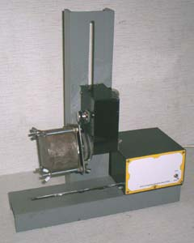
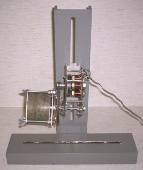
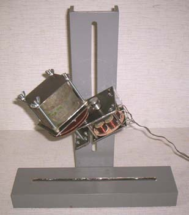
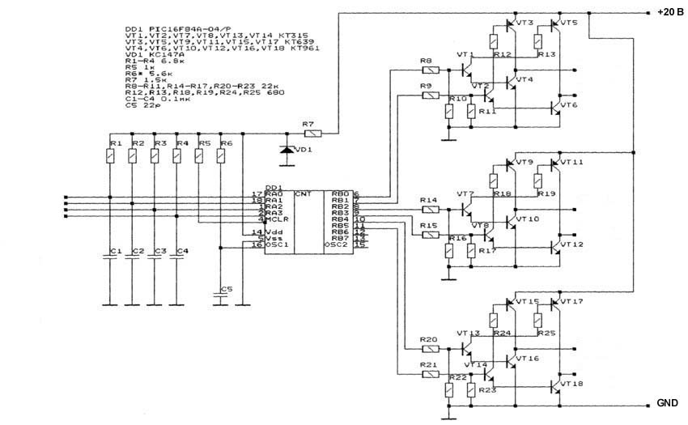
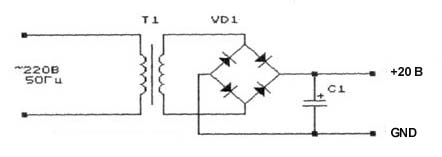
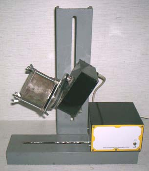
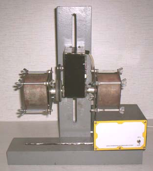

Шаровая микромельница

Назначение
Микромельница разработана для тонкого помола небольших количеств лома и отходов магнитов (алнико, неодим-железо-бор, самарий-кобальт, ферриты), предварительно размагниченных (в установках размагничивания постоянных магнитов [5] и стали [6]) и раздробленных. Полученный порошок в дальнейшем просеивается через сита и используется в опытах по изготовлению магнитопластов [1]. Возможно использование микромельницы для размола других материалов, а также их смешивания.
Конструкция и принцип работы шаровой мельницы [7]
Шаровая мельница представляет собой пустотелый цилиндрический стальной барабан, ось вращения которого располагается горизонтально. В барабан помещаются стальные размольные (измельчающие) тела и размалываемый материал (пульпа). Размольные тела имеют, как правило, округлую форму (шары), но могут использоваться и другие формы, например, цилиндры, призмы. Отношение объема размольных тел к объему барабана определяет коэффициент заполнения шаровой мельницы. Барабан приводится во вращение. В зависимости от скорости вращения барабана возможны различные режимы помола. При малых скоростях помол осуществляется за счет перетирания размалываемого материала размольными телами, скользящими и перекатывающимися по поверхности барабана. При средних скоростях размольные тела, поднимаясь на некоторую высоту и падая, дополнительно оказывают ударное воздействие. При высоких скоростях вращения помол производится за счет центробежных сил. При достижении критической скорости вращения измельчающее действие размольных тел прекращается. Отношение средних размеров частиц порошка до загрузки и после выгрузки называется степенью измельчения. Производительность мельницы зависит от коэффициента заполнения и скорости вращения и при их определенных значениях достигает максимума. Этот режим близок к режиму максимальной мощности привода.
Опытный образец шаровой микромельницы
Внешний вид опытного образца шаровой микромельницы показан на рис. 1.


Рис. 1. Шаровая микромельница (опытный образец). Высота станины 450 мм.
В качестве привода в опытном образце микромельницы использован шаговый двигатель (ШД) [8], вращение которого через понижающий редуктор передается стальному барабану со съемной крышкой. В барабан помещаются размольные тела (стальные шары, призмы) и пульпа. Сверху барабан закрывается крышкой. Крышка закрепляется барашками на четырех шпильках. Двигатель и редуктор с барабаном смонтированы на основании, которое крепится к станине [4] соединением шпилька - гайка-барашек под таким углом, чтобы барабан находился в удобном для оператора или требуемом для работы положении (в зависимости от того, производится загрузка, размол или выгрузка материала).
Характеристики опытного образца шаровой микромельницы:
Система управления (СУ) [9]
Электрическая принципиальная схема СУ ШД приведена на рис. 2.

Рис. 2. Схема электрическая принципиальная СУ ШД опытного образца микромельницы.
СУ собрана на PIC-контроллере PIC16F84A-04/P (DD1). Рабочая частота определяется цепью R6C5 и составляет около 4 МГц. На выходах RB0 - RB5 формируется трехфазная последовательность импульсов, управляющая инверторами VT3 - VT6, VT9 - VT12, VT15 - VT18, к выходам которых (в диагональ инвертора) подключены обмотки ШД (соединение обмоток в группе параллельное). Скорость и направление вращения ШД определяются программой, записанной в контроллер. Цепочка R7VD1 обеспечивает напряжение питания контроллера (DD1) +4.7 В. СУ подключается к источнику питания напряжением +20 вольт. Схема источника питания приведена на рис. 3.

Рис. 3. Схема источника питания СУ ШД опытного образца микромельницы.
К выводам вторичной обмотки сетевого трансформатора T1 подключен мостовой диодный выпрямитель VD1 (КЦ405). В качестве фильтра использован конденсатор C1 (2000 мкФ 25 В).
На основе опытного образца была разработана функционально законченная конструкция лабораторной шаровой микромельницы.
Лабораторная шаровая микромельница
Внешний вид лабораторной шаровой микромельницы показан на рис. 4.
 
Рис. 4. Лабораторная шаровая микромельница с одним (слева) и двумя барабанами. Высота станины 450 мм.
В конструкцию по сравнению с опытным образцом были внесены следующие изменения. В качестве привода в микромельнице использован трехфазный шаговый двигатель-редуктор [3], на оси которого крепится съемный барабан со съемной крышкой. СУ ШД выполнена в виде отдельного блока [9], подключаемого к сети переменного тока напряжением 220 вольт частотой 50 Гц. Все узлы микромельницы крепятся на станине [4] в требуемом для работы положении. Барабан может быть снят с привода и закрытый крышкой или без крышки помещен, например, в печь [2] для просушки пульпы, установку размагничивания [5, 6] или индуктор переменного магнитного поля, образуя с ним вибромельницу. В шаровой микромельнице может быть установлен один или два барабана. Наличие второго барабана позволяет удвоить производительность мельницы, производить одновременно размол двух разных материалов или использовать двухступенчатую схему помола: грубый - в одном барабане, более тонкий - в другом.
Характеристики лабораторной шаровой микромельницы:
За счет применения ШД с высоким вращающим моментом удалось оптимизировать коэффициент заполнения и частоту вращения барабана, что позволило существенно поднять производительность по сравнению с опытным образцом. Мельница способна работать круглосуточно, выгрузка и загрузка материала производится с требуемой периодичностью (обычно один - три раза в сутки).
Состояние разработки
Лабораторная шаровая микромельница используется для размола и смешивания небольших количеств материалов (в частности, для изготовления полимерных магнитов [1]). На ней опробуются различные режимы размола и смешивания, определяется ресурс работы узлов.
Ссылки:
29.09.2006
20.10.2006
10.11.2006
16.06.2010
Альтернативные источники
энергии
Компьютеры и
Интернет
Магнитные поля
Механотронные системы
Перспективные
разработки
Электроника и
технология